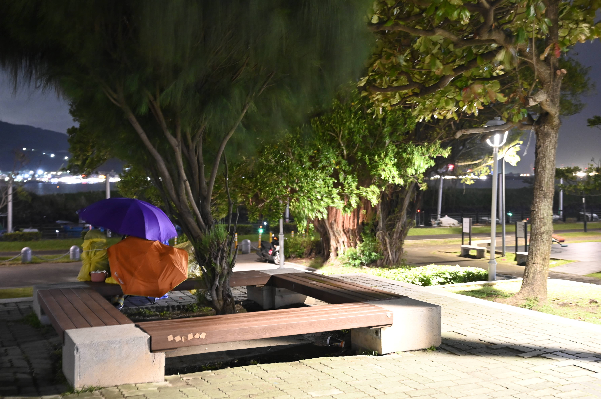

【記者施名真新北報導】陰雨綿綿的淡水街頭，無家者大哥因冷風而凍紅的雙手，緩緩接過熱騰騰的咖哩湯餃後，露出一抹淡淡的微笑致謝。「『流浪的日子』 認識人生百味三部曲」系列活動的第三部曲，於8日在淡水的爬上坡?好書室舉辦。活動由爬上坡?好書室與人生百味合辦，期望透過民眾共煮與上街發餐，推廣無家者飲食來源不穩定的議題。
參與者們自備家中用不到的食材至書店共煮，接著一同上街發餐，期盼能在寒冷的淡水冬日中，帶給無家者大哥大姊們一絲暖意。圖／施名真攝
「吃飯是很好親近的社交模式。」人生百味的石頭湯計畫夥伴黃怡甄表示。因為吃飯是人們日常生活中不可或缺的事情，因此發餐比較容易與無家者們開啟對話。爬上坡?好書室負責人鄭書婷帶著參與者們，穿梭在淡水捷運站周邊的巷弄，尋找無家者大哥大姊的身影，準備將剛出爐的咖哩湯餃與芋圓甜湯送至他們手中。
參與者們分別帶了不同的食材至書店共煮，由今年12歲的邱米睿擔任主廚，負責熬煮咖哩。雖然大家互不相識，但志同道合的心使得彼此之間沒有隔閡。大家一邊低頭削蘿蔔、切青菜與板豆腐，一邊談著淡水無家者的現況。鄭書婷表示，希望參與者透過共煮來交流彼此對議題的想法。?好書室負責人鄭書婷帶著參與者們，穿梭在淡水捷運站周邊的巷弄，尋找無家者大哥大姊的身影，準備將剛出爐的咖哩湯餃與芋圓甜湯送至他們手中。
備料的過程中，參與者們紛紛討論著稍後上街該如何與無家者們互動，並熱切地期待大哥大姊們喜歡這次的餐食。圖／施名真攝
公園的大樹下，無家者大姊用兩支雨傘、一張椅子，搭起了一個躲避細雨的居所。曾任國立政治大學萊特街頭（無家者服務社）的社長謝昕芸說明，無家者們取得食物的方式以團體或民眾發送餐食，以及打零工的收入購買為主。黃怡甄表示，「許多無家者們從事勞力工作，而且年紀較長，偏好調味較重的食物，因此飲食以便當為主。」不過因為發餐時間不固定，所以食物來源較不穩定。淡水捷運站附近橋墩下的無家者多已入睡，身邊擺著泡麵與罐頭，恰巧有位無家者大哥拿著幾顆饅頭走回來休息。這是他們普遍的食物來源。謝昕芸提問，「哥姊這樣營養不均的飲食習慣，算是對生活的妥協？」無家者們一方面因為能填飽肚子而心存感激，但也因為無法完全自主掌控自己的飲食而感到無力。

謝昕芸補充，台灣的無家者大多有高齡、牙口不好的問題，因此不太容易進食或吃完整份便當，這可能被大眾誤解為浪費食物，但其實無家者的內心也感到很兩難。圖／施名真攝
隨著活動來到尾聲，參與者們紛紛收拾鍋具、清洗碗盤，並一邊分享上街後的體悟。「在送餐的過程中，大家會蹲下與無家者們互動。」民眾蘇庭分享，「我覺得這是一種平等的交流，讓我發現我們和無家者其實沒有太大的差別。」鄭書婷也期盼未來能組成團隊，定期共煮與上街發餐，讓更多人認識無家者。一頓飯不僅能讓人溫飽，也能拉近民眾與無家者的距離。黃怡甄則堅定道，「希望這個社會不排除任何一個人。」
黃怡甄表示，許多無家者即便存到足夠租房的錢，但仍會因為年紀、形象標籤或工作不穩定等因素，而被拒之門外，再次流落街頭。圖／人生百味提供